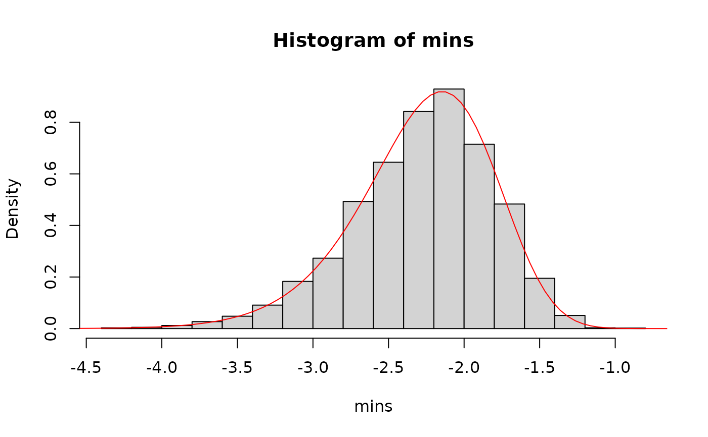
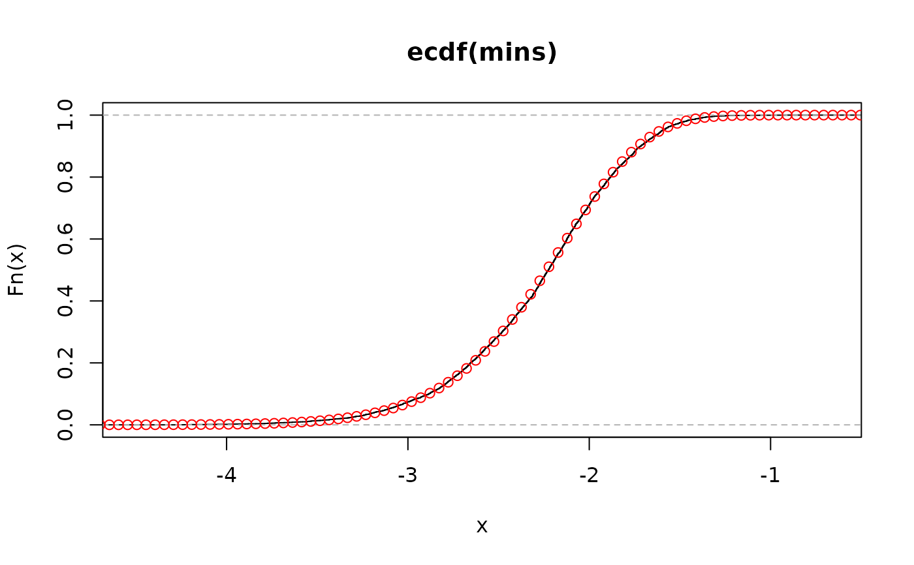
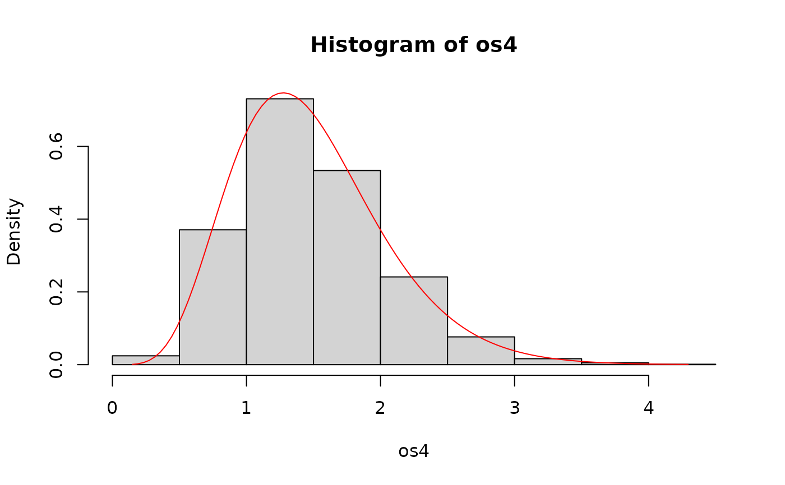
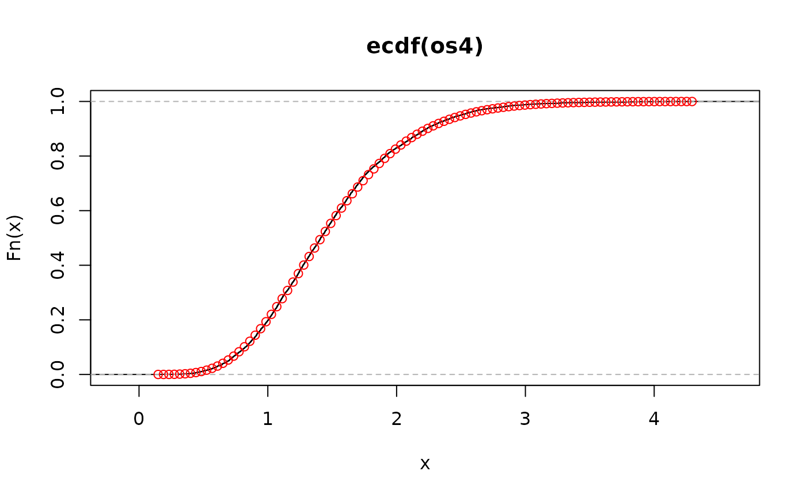
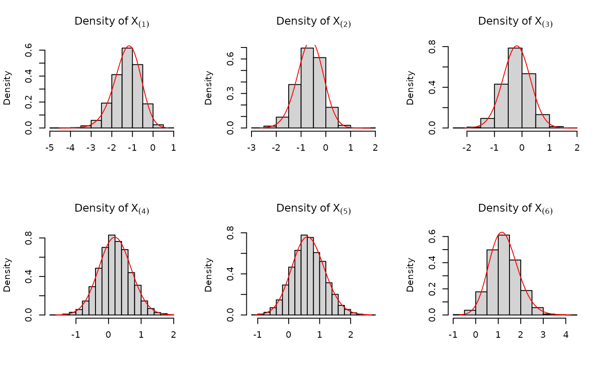
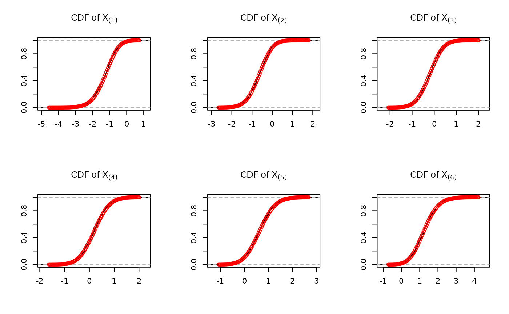
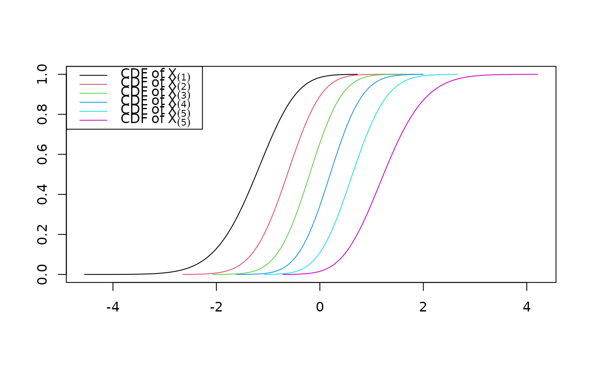

Density of distribution function for the jth order statistics from a sample of size n from a known distribution function.
Details
For a known distribution with defined density and distribution functions,
e.g., normal (dnorm, pnorm), or
chisq (dchisq, pchisq), we define
the density function of of the jth order statistic, from a sample of size n,
to be
$$ \frac{n!}{(j-1)!(n-j)!} f(x) F(x)^{j-1} (1 - F(x))^{n-j}$$.
and the distribution function to be
$$\sum_{k = j}^{n} \binom{n}{k} \left[F(x)\right]^{k} \left[1-F(x)\right]^{n-k}$$.
References
George Casella and Roger L. Berger (2002). Statistical Inference. 2nd edition. Duxbury Thomson Learning.
Examples
# Example 1
# Find the distribution of the minimum from a sample of size 54 from a
# standard normal distribution
simulated_data <- matrix(rnorm(n = 54 * 5000), ncol = 54)
# find all the minimums for each of the simulated samples of size 54
mins <- apply(simulated_data, 1, min)
# get the density values
x <- seq(-5, 0, length.out = 100)
d <- d_order_statistic(x, n = 54, j = 1, distribution = "norm")
# plot the histogram and density
hist(mins, freq = FALSE)
points(x, d, type = "l", col = "red")

# plot the distribution function
plot(ecdf(mins))
points(x, p_order_statistic(q = x, n = 54, j = 1, distribution = "norm"), col = "red")

# Example 2
# Find the density and distrubition of the fourth order statistic from a
# sample of size 12 from a chisq distribution with 3 degrees of freedom
simulated_data <- matrix(rchisq(n = 12 * 5000, df = 3), ncol = 12)
os4 <- apply(simulated_data, 1, function(x) sort(x)[4])
x <- seq(min(os4), max(os4), length.out = 100)
d <- d_order_statistic(x, n = 12, j = 4, distribution = "chisq", df = 3)
p <- p_order_statistic(x, n = 12, j = 4, distribution = "chisq", df = 3)
hist(os4, freq = FALSE); points(x, d, type = "l", col = "red")

plot(ecdf(os4)); points(x, p, col = "red")

# Example 3
# For a set of j observations, find the values for each of the j order
# statistics
simulated_data <- matrix(rnorm(n = 6 * 5000), ncol = 6)
simulated_data <- apply(simulated_data, 1, sort)
xs <- apply(simulated_data, 1, range)
xs <- apply(xs, 2, function(x) {seq(x[1], x[2], length.out = 100)})
ds <- apply(xs, 1, d_order_statistic, n = 6, j = 1:6, distribution = "norm")
ps <- apply(xs, 1, p_order_statistic, n = 6, j = 1:6, distribution = "norm")
old_par <- par() # save current settings
par(mfrow = c(2, 3))
for (i in 1:6) {
hist(simulated_data[i, ]
, freq = FALSE
, main = substitute(Density~of~X[(ii)], list(ii = i))
, xlab = ""
)
points(xs[, i], ds[i, ], type = "l", col = "red")
}

for (i in 1:6) {
plot(ecdf(simulated_data[i, ])
, main = substitute(CDF~of~X[(ii)], list(ii = i))
, ylab = ""
, xlab = ""
)
points(xs[, i], ps[i, ], type = "p", col = "red")
}

par(mfrow = c(1, 1))
plot(xs[, 1], ps[1, ], type = "l", col = 1, xlim = range(xs), ylab = "", xlab = "")
for(i in 2:6) {
points(xs[, i], ps[i, ], type = "l", col = i)
}
legend("topleft", col = 1:6, lty = 1, legend =
c(
expression(CDF~of~X[(1)]),
expression(CDF~of~X[(2)]),
expression(CDF~of~X[(3)]),
expression(CDF~of~X[(4)]),
expression(CDF~of~X[(5)]),
expression(CDF~of~X[(5)])
))

par(old_par) # reset par to setting prior to running this example
#> Warning: graphical parameter "cin" cannot be set
#> Warning: graphical parameter "cra" cannot be set
#> Warning: graphical parameter "csi" cannot be set
#> Warning: graphical parameter "cxy" cannot be set
#> Warning: graphical parameter "din" cannot be set
#> Warning: graphical parameter "page" cannot be set